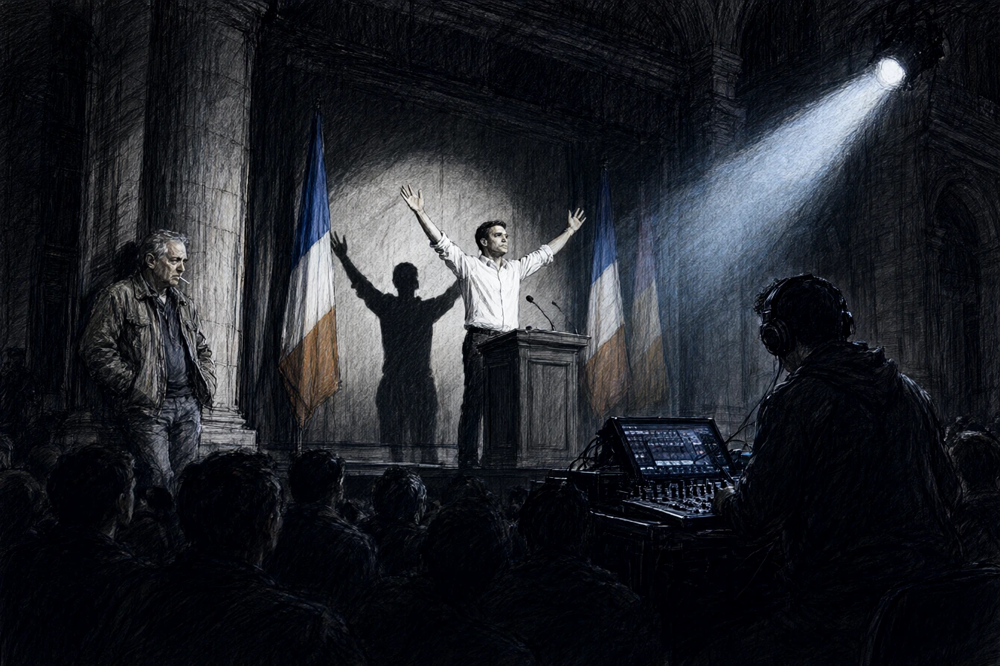

Dans la grande salle de la Bourse, place du Maréchal-de-Lattre-de-Tassigny, six cents personnes applaudissaient debout sous des drapeaux tricolores et des bannières vert d'eau. Sur l'estrade, Julien Ostermann, les manches de chemise blanche retroussées sur des avant-bras bronzés, venait d'achever sa tirade sur le renouveau civique des terroirs rhénans. À trente-deux ans, Ostermann avait le sourire éclatant des héritiers que le doute n'a jamais effleurés.
Au fond de la travée centrale, adossé à un pilier de staff, Henri Leclerc mâchonnait un cure-dents en bois. À soixante ans, dont trente-cinq passés dans les couloirs du conseil général et les prétoires correctionnels pour Le Dernier Carré, Leclerc reconnaissait la musique avant que le refrain ne commence.
Près de la table de mixage, un homme en costume sans cravate guidait le rythme des acclamations d'un signe de la main.
Leclerc s'approcha de la console.
« Le pontage sonore est impeccable, jeune homme. Trois rappels programmés à la quarantième minute, c'est le minutage des tournées de variété. »
L'homme se retourna, l'oreillette vissée au tympan.
« Nous gérons une dynamique d'attention, monsieur. Les citoyens ont besoin d'élan, pas d'arguties budgétaires. « Ostermann leur promet la gratuité des crèches et la réouverture de la ligne de chemin de fer de la vallée de la Bruche. Il sait très bien que la région a voté le déclassement des voies en commission fermée mardi matin. » « Il leur promet d'y croire, » répondit le technicien en basculant deux curseurs vers le haut pour faire monter les cuivres de la sono. »
* * *
À deux heures du matin, dans la rédaction du Dernier Carré, une mansarde de la rue du Vieux-Marché-aux-Poissons encombrée de collections reliées du journal officiel, Leclerc étalait ses relevés sous la lampe de bureau.
Le financement de la campagne ne reposait pas sur les cotisations à vingt euros des sections de quartier. Trois associations déclarées sous le statut de la loi de 1901 à Haguenau et Sélestat avaient injecté quatre-vingt mille euros sous forme de mécénat civique. Derrière les domiciliations fictives, les virements bancaires remontaient à une société de conseil en stratégie d'opinion basée au Wacken, filiale directe d'OmniCorp Influence.
Les factures de régie portaient un libellé récurrent : Tests d'impact narratif et canalisation émotionnelle. Chaque discours d'Ostermann était étalonné selon les profils d'adhésion fournis par les sphères Clarity.
Dans un dossier de sauvegarde crypté que son confrère Brand lui avait transmis avant son départ de Strasbourg, Leclerc retrouva une note interne mentionnant un protocole Schattenspiel. Une ligne manuscrite en bas de page résumait le cahier des charges assigné au candidat : « Ostermann offre le visage de la contestation tolérable. La jeunesse canalisée est une clientèle stabilisée. G.S. »
Leclerc ôta ses lunettes et se frotta les paupières. L'homme qu'il s'apprêtait à dénoncer n'était pas un tricheur de sous-préfecture ; c'était un produit homologué.
* * *
Le jeudi suivant, après un débat télévisé dans les studios de France 3 Alsace, Leclerc attendit Ostermann dans le couloir des loges, entre un portant de costumes et deux caisses de câbles coaxiaux.
Ostermann ôtait son fond de teint avec une lingette humide devant la glace éclairée d'ampoules nues.
« Leclerc, dit-il sans se retourner en voyant la silhouette du journaliste dans le miroir. Votre rédacteur en chef m'a promis un portrait sur deux colonnes pour le numéro de clôture. « Ce sera trois pages d'audit financier, monsieur Ostermann. J'ai les bordereaux d'OmniCorp Influence. » « Et qui s'en soucie, Henri ? » »
Ostermann jeta la lingette dans une corbeille en fer et pivota sur son fauteuil. Son sourire n'avait rien perdu de sa chaleur télévisuelle.
« Vous croyez que les électeurs votent pour un programme de fiscalité locale ? Ils votent pour quelqu'un qui a l'air de les aimer sans leur demander de faire des efforts. OmniCorp me paie les sondages, les salles et les visuels. En échange, je ne touche pas aux concessions de fibre optique ni aux zones d'activité du port autonome. « Vous leur vendez une illusion de démocratie. » « Je leur vends la seule démocratie qui fonctionne encore : un spectacle propre, sans grève et sans faillite. Si vous publiez vos chiffres, mes partisans diront que le journal est payé par la vieille droite d'Eckbolsheim pour salir un homme neuf. Vous perdrez vos trois cents derniers abonnés et je serai élu avec douze points d'avance. » »
Leclerc garda le silence. Dans la poche de sa veste, le dictaphone enregistrait chaque souffle.
* * *
Le numéro spécial du Dernier Carré parut le samedi avec une manchette noire : Julien Ostermann : la marionnette d'OmniCorp. L'article alignait les numéros de comptes et les fac-similés des contrats.
Le dimanche soir, les téléviseurs du buffet de la gare centrale diffusaient les résultats du second tour. Julien Ostermann franchissait la barre des cinquante-six pour cent sous une pluie de confettis blancs dans les salons de l'Hôtel de Ville. À l'écran, le jeune député embrassait sa directrice de campagne avec des larmes parfaitement dosées.
Au comptoir de la brasserie de la gare, Leclerc vida son demi de bière d'un trait. Le bruit des annonces de trains couvrait les discours de remerciement.
Il sortit son carnet de notes de sa poche, détacha les feuillets d'enquête consacrés au protocole Schattenspiel, les plia en quatre et les déposa au fond du cendrier de verre. Il craqua une allumette, regarda le papier se tordre dans une flamme bleue, puis poussa la porte battante vers le quai numéro un.